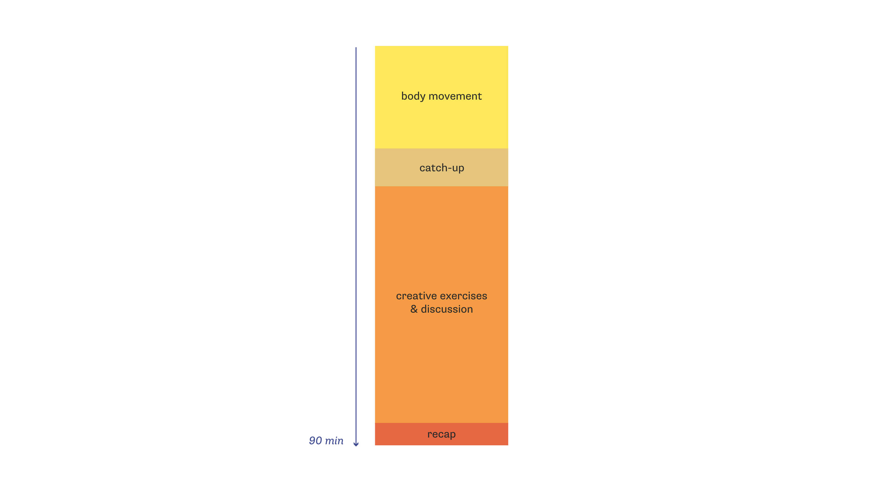
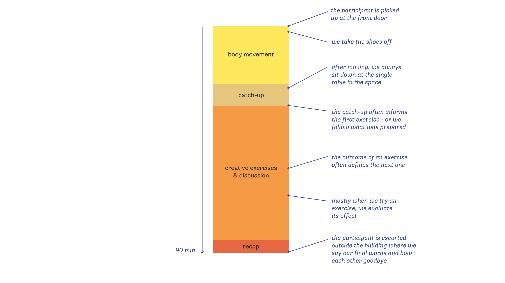
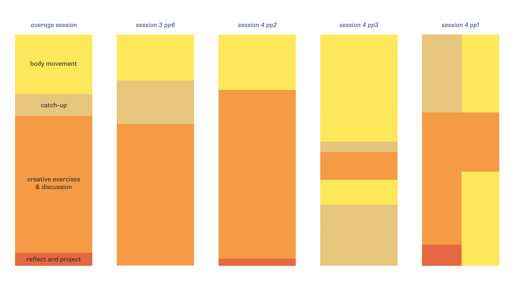
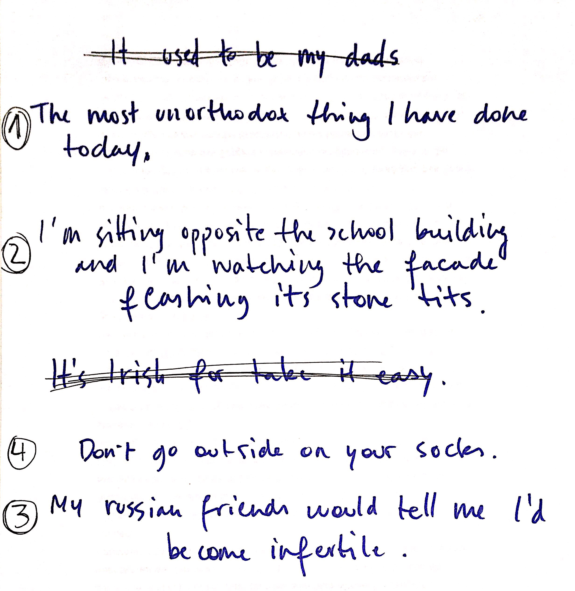
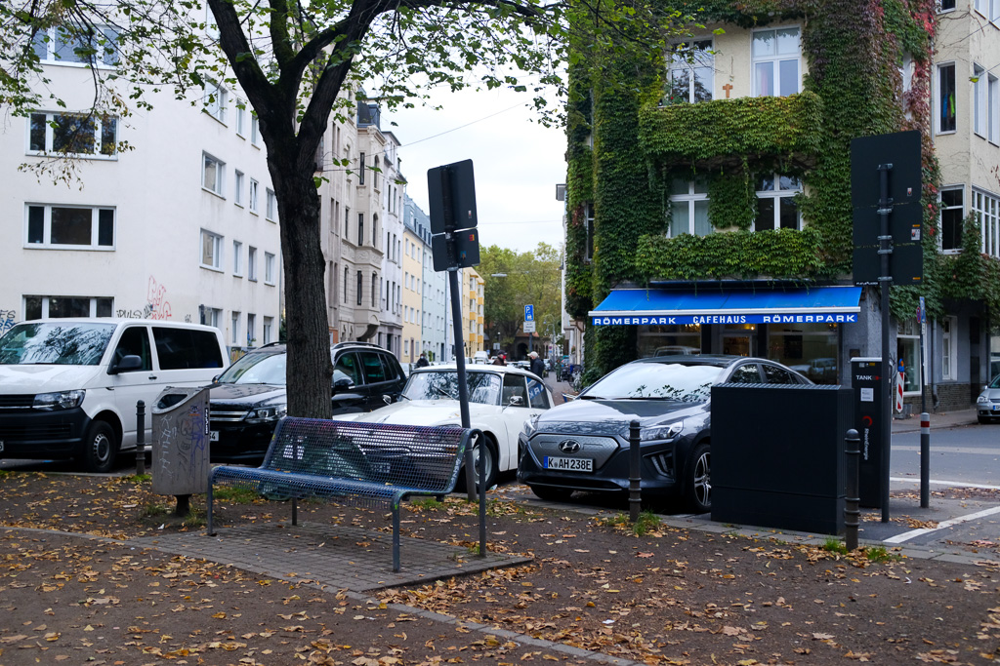
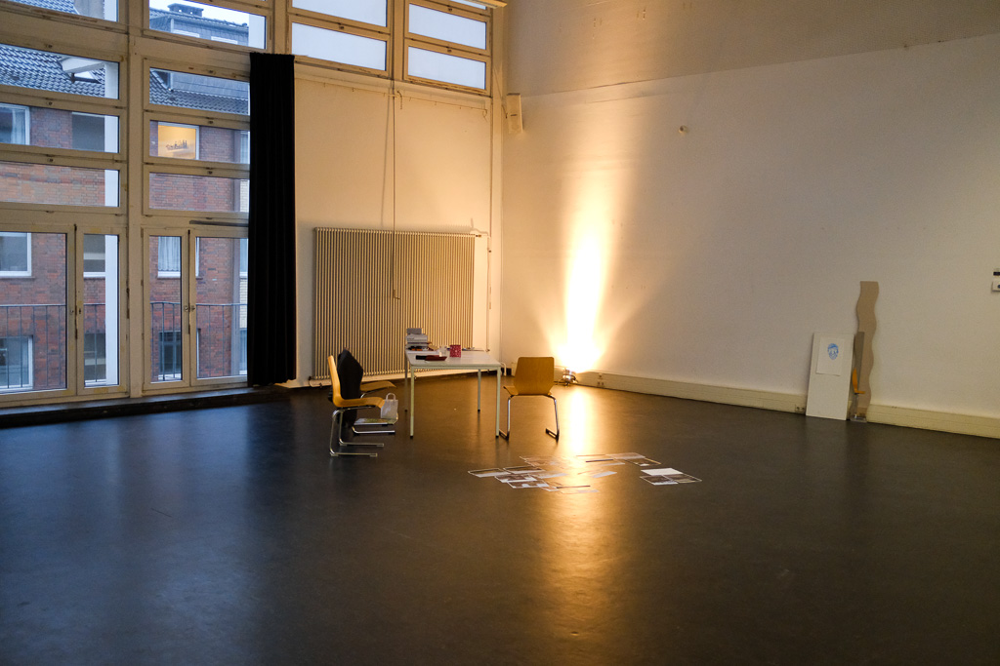
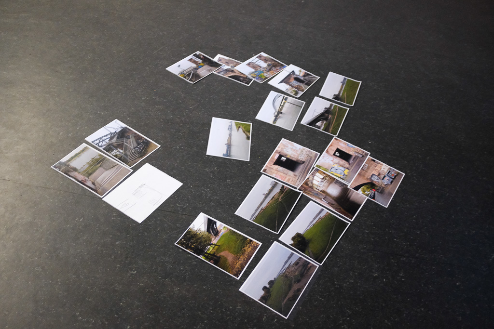
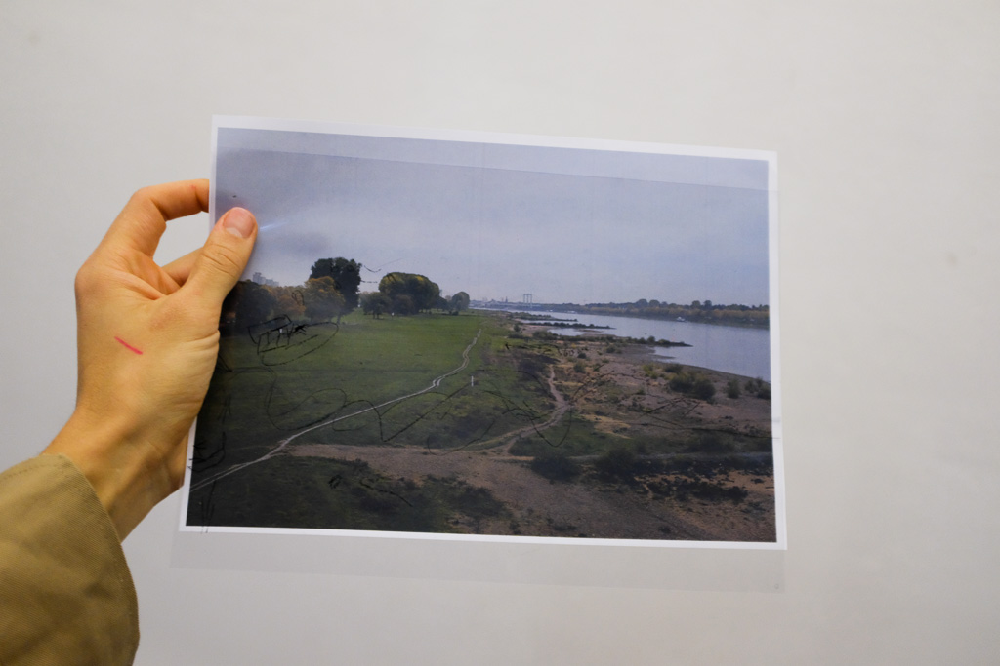

Session 4 - I am developing a bond with the participants. The routine of having 1.5h time slots with 7 individuals each week begins to wear in.
Rest
I notice too how the sessions begin to wear on me. Every joint moment with the participants, whether fruitful or confronting, gives me a boost of energy that drives me to continue. I’m learning and processing a lot. One of my main goals during a regular week is to stay well-rested and positive. As when trying to be an ignorant master, who can listen and respond mindfully to a given situation, it seems important to be okay with myself first. Enough sleep and self-care are the basic requirements to maintain holding space for someone else. I understood that for this kind of work, there is little value in particular theories or extensive preparation if the basics are systematically neglected and you can’t manage to be present. So trivial yet so true.
Now of course it wasn’t the case that I felt at my best and perfectly well rested with every session, but I tried to make a conscious effort. Power naps, solo dance moments and loud singing to stay sane.
Emerging Structure and Rituals
As with every activity taking place in the same space over several weeks, a structure emerges and specific rituals establish themselves. It’s these routines, small gestures and interactions which make a process feel familiar and trusted. On the first level, I have identified retrospectively that there is a structure that the participants and I came to follow, existing out of 4 main components. 
The sessions, with the occasional exception, always begin with body movement. Subsequently, we mostly have a catch-up at the table where we talk about what happened since last week. To then move into the creative exercises, which defines the biggest part of the session. To close down with a recap and lookout on the following week. Within those main components, there are several actions that we repeat almost every week. 
But then again, the main components and their rituals are interchangeable and haven't been followed religiously. As with some participants, there was the desire to do more body movement and with others, there was a need for a longer catch-up. Or the catch-up would happen during the body movement part when a person would silently act out a scenario that they experienced during the week. (As shown in the last session-block below) This structure was not planned - but emerged and was analysed after.

Cut-up
Cut-up is a technique used by various artists to create something new from something already existing. For example, cutting up different articles from a newspaper and subsequently selecting and rearranging the pieces. This new assembly of sentences can either stand on its own or serve as fresh input to start writing. In its simplicity, the cut-up technique allows for unforeseen and spontaneous content to emerge.
"You cannot will spontaneity. But you can introduce the unpredictable spontaneous factor with a pair of scissors." - William S. Burroughs
From the 7 participants, 4 are interested in writing. As we already established freewriting in the first sessions and participants were getting into the rhythm of producing content, it was time to experiment with different ways to get into a creative writing process.
Taking inspiration from the cut-up method, I asked to 1) select 5-7 sentences from a piece of content that you wrote 2) give the selected sentences to someone else 3) let the other strike out a third of the sentences and rearrange the order 4) take the newly selected sentences and use those as a basis to start writing a new story.

The experiment turned out differently for every participant. The act of selecting, striking and rearranging content gives way to odd constellations of text and absurd narratives. By implementing simple rules, you partly take away self-critique, surrendering to the absurdity of the exercise and thus allowing yourself to be imaginative and creative. For two participants, the outcome of the cut-up exercise formed the basis for a story they would further develop in the next sessions.
Character Interviews
When a participant’s story took place in a public space nearby, I got the idea to go to that spot and act out how her character would walk and talk. Although she was first reluctant to join me, the in-situ improvisation gave her new insights to develop the story. This idea became the character interview, a method in which I would ask how a (fictional) character would respond to certain situations. By being outside and taking impulses from the environment as examples to respond to, it should help the writer to further define specific traits of the character.

Breaking out of the room
From session 5 onwards, I gradually began to leave the big room and went out in the Südstadt to take the surroundings as information to work with. Whether it would inform a writing or observation exercise, or provide the scene for a scenario or character interview, going outside is always a good idea when looking for novel input.
With one participant, I went for a walk along the Rhine. As we were passing a specific bridge in the South of Cologne, he started sharing all of the ideas he had about making the complete area more accessible. By writing down the ideas and taking pictures of the landscape that needed improvement, we turned our walk into an investigation. Later, we drew several ideas onto the images to send to the city of Cologne.



Improvisation
Within the body movement part of the sessions, I paved the way to engage in different forms of improvisation. First, I would warm up with abstract silent exercises such as negative space and twin limbs. Then, I would switch over to more concrete improvisation exercises like Show me how you... to finally act out any scene reflecting the situation.
Throughout the sessions, it became clear that any creative process, regardless of the medium of expression, benefits from improvisation. Participants have mentioned that both playing scenarios and improvising with body movement support their creative process. Even when there is no direct link to a specific topic in a played scenario or abstract dance exercise, the act of improvisation opens little doors and creates new connections in the body and mind.
But it doesn’t always work. I mean, I didn’t always manage to take the participants into an improvisation. At times, some people would experience a blockage, a strong resistance to participate in a situation and not managing to overcome that. When this happened during the sessions, I dealt with it in different ways:
1) don’t say anything, leave the person in their space and give extra time
2) reassure the participant to allow the blockage and give extra time “Hey it’s okay. Just embrace that feeling. Start very small. Don’t forget to breathe. Take the time you need”
3) push the participant to let go and engage in what is asked “Just keep moving. Follow me. You can do this. Focus on the task (or scenario or ...)”
4) switch to another exercise “So, the next exercise we are going to do is …”
5) install a time-out and ask the participant what he/she is experiencing “Hey, let’s sit down for a second. How was that for you? What did you feel? Where do you think that comes from? How would you like to start this exercise? Should we try it again, where I follow you?
Strategy number 3) sounds like the traditional sports-coach who is sure that pushing you through this experience will make you grow. Although I believe that this approach is justified in some cases even when trying to make people improvise, I generally favour the silent, let it be method of looking away and leaving participants in the uncanny moment. Which is not always possible. Depending on the situation, making space to reflect on an experience and trying again is more appropriate, just like simply moving on.
Until now, there was only one particular moment in which I evidently pushed a participant too far. To give you some context: for this session, this person requested to dance her anxiety. Without properly talking about what that means, I understood that she wanted to be pushed gently out of her comfort zone. So I prepared for our meeting, thinking about ways to … make her feel uncomfortable and dance her anxiety. As strange as it seems, I got excited by the prospects of the session. I planned a sequence of movements, starting slowly but increasing the pace steadily, asking her to look at herself while moving in the space.
Although she wanted to continue to move slowly, I increased the pace and heightened the tension to eventually reach a moment in which she would be dancing her anxiety. She participated until she began to feel physically unwell. We stopped and sat down.
Regardless of whether it was the intensity of the moment that made her feel sick or something else, my pushy behaviour did not sit well with me. In hindsight, it was one of the only sessions for which I thoroughly prepared and was motivated to push the agenda because I received a mandate to do so. Since the intention was to make a journey (far?) out of the comfort zone. That's at least what I thought at the time. Luckily, these difficult moments opened a discussion between us about perceiving oneself, which lead to the topic we worked on in the next sessions.
Here, the question arises whether I have sufficient 'expertise' to deal with such situations. What is the right response when triggering an intense emotional reaction in someone? To what extent do I, as the initiator of this experience, take responsibility in that? One participant has her thoughts about it - to design the relationship you are entering.